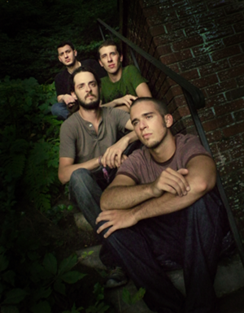

About this website
This site is intended to be a stable online resource for a portion of art, music, and information compiled from Forman's history. If you're just learning of us, check out some music. Forman is not currently active, but we're all involved with a lot of other musical and artistic ventures. Check out the links page for a variety of other things. If you'd like to contribute to help keep this web resource going, or help us recoup our 8 years of operating costs, or to help us continue with new musical endeavors, please check out the support page. You'll get a nice t-shirt or CD out of the bargain.
There are tons of old videos, photos, and live recordings stockpiled from our 8 years together (as well as some more recent, unreleased material), so be sure to check back - we'll keep updating the site with unreleased media.
You can sign up on the Mailing List found at the bottom of every page, and we'll send you a brief update whenever there's any news to share.
Thanks for visiting.
Updates
2013-11-18
There's a HUGE MERCH SALE in the SUPPORT section. Every item has been discounted 50% or more. We're hoping to clear out some of our remaining merch stock. A few of the items only have 1 or 2 pieces left so act fast!!
What are you waiting for?? GO!
2013-02-20
It's been a month since our last update, but this is a juicy one! For your viewing enjoyment we've posted our (almost) entire set from a show we played at a really cool venue called the Tuscan Cafe in Warwick, NY. This video features a handful of songs that were never recorded or released on any of our studio albums, and some were only played live a few times. Click here for the video. Let us know what you think.
Also, thanks to all of you who have sent us messages, comments, or in-person love since this site has gone up. We have lots of great memories from our long history and it's nice getting to reminisce about some of the great times we had. Also, even though the big discounts in the store have ended, you can still support our current musical endeavors by buying some merch. Thanks and see you soon, in some iteration!
About Forman
{kind=link}
front to back: [ Dan Andersen ] [ Billy Schmidt ] [ Rich Bozek ] [ Mike Kemmlein ]
The band Forman created music from 2005 to 2012. They began in Oneonta, NY, and then relocated to Nyack, NY. The music is rooted in the spirit of the cerebral, composition-heavy progressive rock of the 1970's, filtered through the lens of modern vocal-based indie and pop, and tied together by a subtle pulsing undercurrent of world music. When performing live, improvisation became the glue of the performance, linking together songs and expanding new gaps in the compositions. The unpredictability would ignite spontaneous moments spanning the musical gamut, combining everything from rock to funk to latin to avant garde to create new, unpredictable compositions on the spot.
In their 8-year history they played such venues as the Bitter End (NYC), Sullivan Hall (NYC), the Stone Pony (Asbury Park, NJ), Northern Lights (Clifton Park, NY), the Turning Point (Piermont, NY), and Nectar's (Burlington, VT). They have shared the stage with a number of great artists such as Blues Traveler, Robert Randolph and the Family Band, Chris Barron of the Spin Doctors, Gavin Castleton, Consider the Source, Shwizz, This Old Ghost, Hannibal Montana, and many others.
They have two studio albums to their name: 2011's "Day of Delta," and 2008's "Balance." Both albums were recorded, produced, funded, designed, and released independently.
From 2011 to 2012, Forman hosted the Living Room Sessions, a music and art showcase held every other week in a local Nyack, NY venue. The goal was to "bring the living room to the audience": each show would find the venue transformed from a bar into an elaborately decorated living-room performance space, and feature live music by Forman and another new group each night. The Sessions featured paintings, projections, and other artwork by different local visual artists, and art supplies were handed out freely to audience members, who were encouraged to interact and create their own art which would be featured on the band's Facebook page.
The members of Forman still create many kinds of music and art. If you like the idea of proliferation of independent artists, please consider supporting us by checking out the merch page. You can also check out the links page to see what we're up to now.